Tarih kokan sokaklar, çiniyle bezenmiş duvarlar ve zamanın yavaş aktığı bir şehir: Kütahya!
Anadolu'nun kalbinde saklı bir hazineyi keşfetmeye hazır mısınız?
Her köşesi ayrı bir hikâye fısıldayan bu şehir, binlerce yıllık geçmişiyle yalnızca bir yer değil, adeta
yaşayan bir tarih kitabı.
Osmanlı'nın zarafeti, Friglerin gizemi, çininin büyüsü...
Hepsi Kütahya'da sizi bekliyor.
Hazırsanız, bu eşsiz yolculuğa birlikte çıkalım!
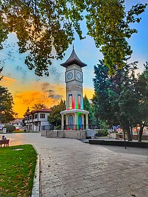
Kuruluş tarihi kesin olarak tespit edilememekle beraber, tarihi MÖ 3000 yıllarına uzanmaktadır. Eski kaynaklara göre, Kütahya'nın antik çağlardaki adı Kotiaeon, Cotiaeum ve Koti şeklinde geçmektedir. İl topraklarına yerleşen en eski halk Friglerdir. MÖ 1200'lerde Anadolu'ya gelen Frigler, Hitit İmparatorluğunun topraklarına girdiler ve bir devlet olarak örgütlendiler. MÖ 676'da Kimmerler, Frigya Kralı III. Midas'ı bozguna uğratarak Kütahya ve çevresine egemen oldular. Alyattes'in Lidya Kralı olduğu dönemde Kimmer egemenliği yerini Lidya yönetimi aldı. MÖ 546'da Persler Lidya Ordusunu yenilgiye uğratarak Anadolu'yu istila etti. MÖ 334'te Biga Çayı yakınlarında Persleri yenilgiye uğratan İskender yörede üstünlük kurdu. Büyük İskender'in MÖ 323'te ölümü ile Kütahya ve yöresi komutanlarından Antigonos'a geçti. MÖ 133'te Roma yönetimine girdi. Piskoposluk merkezi haline getirildi. 1071'de Malazgirt Meydan Muharebesi'nde Alp Arslan'a yenilen Bizans İmparatoru Romanus Diogenes tutsaklık dönüşü Kütahya'ya getirildi ve gözleri kör edildi. 1078'de Anadolu Selçuklu Devletini kuran Kutalmışoğlu Süleyman Şah Kütahya'yı da ele geçirdi. 1097'de Haçlıların saldırısına uğradı. II. Kılıç Arslan kaybedilen topraklarla birlikte Kütahya'yı geri aldı. II. Kılıç Arslan'dan sonra taht kavgaları nedeniyle tekrar Bizans'ın eline geçen şehir, son olarak I. Alâeddin Keykubad zamanında (1233) Selçuklu topraklarına dahil oldu. 1277'de II. Gıyaseddin Keyhüsrev Kütahya yöresini Germiyanoğlu Süleyman Şah kızı Devlet Hatun'u Osmanlı Sultanı I. Murat'ın oğlu Yıldırım Bayezid'a verdi. (1381) Germiyanoğulları Beyliğinin toprakları Devlet Hatun'un çeyizi olarak Osmanlılara verildi. (Kütahya ve çevresi dahil) 1402 Ankara Savaşında, Bayezid'i ağır bir yenilgiye uğratan Timur, Kütahya'yı alarak II. Yakup Bey'e geri verdi. Kütahya daha sonra Osmanlılara geçti ve Sancak Merkezi oldu. Sultan II. Beyazıt'ın zamanında Şah İsmail yanlısı Şahkulu Kütahya'da ayaklandı. Bu isyan 1511 yılında bastırıldı. 19. yüzyılda Osmanlı Devletine başkaldıran Mısır Valisi Kavalalı Mehmet Ali Paşa'nın oğlu Kütahya'yı işgal etti. Sultan II. Mahmut ile imzalanan Kütahya Antlaşması ile Mısır askerleri Kütahya'yı terk etti. Avrupa'da 1848 ihtilalleri sırasında, Macarlar'da ayaklanmışlardı. Macar Ulusal Hareketi Avusturya ve Rusya tarafından bastırılınca hareketin önde gelenlerinden bazıları 1849'da Osmanlı Hükûmetine sığındı. Başta Lajos Kossuth olmak üzere Kütahya 'ya yerleştirilen Macarlar, 1851'e kadar burada kaldılar. Kütahya 1867'de Hüdavendigar Vilayetine bağlı bir sancak merkezi iken, II. Meşrutiyetten sonra bağımsız bir sancak oldu. Milli Mücadele yıllarında, Ocak 1921'de Çerkez Ethem düzenli ordu çatışmasına sahne olan Kütahya, 17 Temmuz 1921'de Kütahya-Eskişehir Muharebelerinde TBMM Batı Cephesi ordusunun yenilmesi üzerine Yunanların işgaline uğradı. Büyük Taarruz'a kadar işgal altında kalan Kütahya, 30 Ağustos 1922'de kurtuldu. Kütahya 8 Ekim 1923'te Vilayet durumuna getirilmiştir.
Küpecik, Kütahya'da Ramazan aylarında gerçekleştirilen folklorik bir olaydır. Kütahya'da uzun yıllardan beri devam eden bir oyundur ve çocuklar tarafından Ramazan ayında oynanır. Çocuklar Küpecik tekerlemesini okuyup evleri gezerek para, şeker ve çikolata benzeri şeyler toplarlar. Küpecik geleneğinde, uygulamaya katılan çocuklar, akşamın sonuna kadar topladıkları para, çikolata, şeker gibi unsurları kendi aralarında eşit ölçüde paylaşırlar. Dağıtım işlemi bittikten sonra ertesi gün için anlaşan çocuklar evlerine dağılırlar.
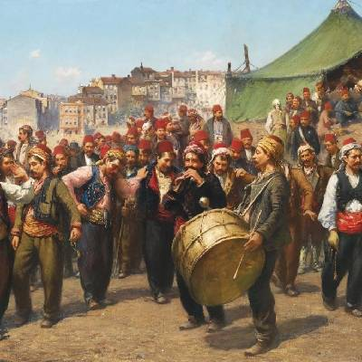
Kütahya'da gerçekleştirilen folklorik bir olaydır. Kaynağını Osmanlı Devleti'nde Surre Alayı'nın Kütahya'dan geçerken çocukların bu alaydan şeker, çikolata, para vs. istemesinden alan olay günümüzde de Ramazan aylarında yörede gerçekleştirilmektedir.
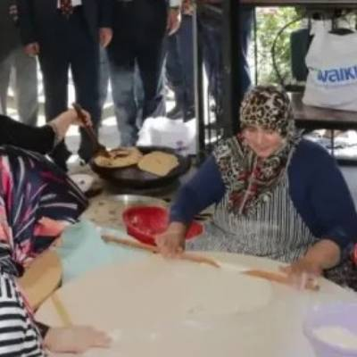
İlkbaharda tellâl adı verilen kişi sokak sokak gezerek sokak başlarında durur, mahalleliyi mânilerle Müderris Bahçesi'ne davet ederdi. Nazilliler yellensin, gözlemeler tellensin, çarşamba günü hanımlar ve beyler Müderris'te eğlensin diye yüksek sesle bağırırdı. Müderris Bahçesi şimdiki Hamidiye Mahallesi'nde yamaçta, yeşillikler içerisinde çeşmeleri bulunan bir yerdi. Üst tarafında birçok su değirmeni bulunur, Aksu Çayı buradan geçerdi. Müderris günü herkes o bahçeye gider, yöresel bir yiyecek olan Gökçimen hamursuzu, haşhaşlı gözleme, un helvası yapılır; un helvasının içerisine ağaçların çiçekleri atılırdı. Baharın gelişi burada kutlanırdı. Günümüzde Müderris Bahçesi'nin büyük bir bölümü kalmamıştır.
Tereyağlı-yoğurtlu cimcik, kıymalı sini mantısı, tereyağlı-yoğurtlu kaçamak, tereyağlı peynirli cevizli belirgat, haşhaşlı gözleme, suda haşlama mantı, mercimekli mantı, kulak aşı, mercimekli tosunum, tepside haşhaşlı katmer, kıymalı-peynirli-ıspanaklı şibit, sodalı hamursuz, Kütahya höşmerimi, şibitli tavuk tiridi, papatesli dolamber böreği, namaz lokması, Gökçimen hamursuzu, tahinli çörek, kıymalı su böreği, sarma hamur dolması, cevizli gelin çöreği.
Sıkıcık, miyane, oğmaç, yoğurt çevirme çorbası (düğün çorbası), kızılcık tarhanası, tutmaç, tarhana, tekke, çene çarpan ve paça çorbası.
Ilıbada (labada) dolması, etli yaprak sarma, zeytinyağlı soğan dolması, etli lahana sarması.
Göveç (güveç), Kütahya usulü kavurma, küp eti, kuzu kaburga kebabı.
Hekmane erik hoşafı, güllaç, kaymak baklavası, Kütahya usulü höşmerim, pelûze, çekme helva, yufka tatlısı, su muhallebisi, gelincik şurubu (şerbeti).
Kütahya, yüzyıllardır Türk kültürünün ve sanatının en önemli merkezlerinden biri olmuştur. Bu şehir, özellikle ünlü çiniciliğiyle tanınır ve bu gelenek günümüze kadar yaşatılmaktadır. Kütahya çini sanatı, Osmanlı İmparatorluğu döneminden başlayarak, tarihi kökleri derinlere uzanan bir el sanatıdır. Kütahya çiniciliği, özellikle zarif desenleri, canlı renkleri ve ince işçilikleri ile dikkat çeker. Geleneksel olarak yapılan çini işler, genellikle mavi, kırmızı, yeşil ve sarı gibi canlı renklerde ve geometrik desenlerden doğa motiflerine kadar geniş bir yelpazede şekillenir. Bu sanat, sadece estetik açıdan değil, aynı zamanda kültürel değer taşıyan bir miras olarak da büyük bir öneme sahiptir. Çinicilik, Kütahya'da yüzyıllardır süregelen bir zanaat olmasının yanı sıra, günümüzde modern tasarımlarla da harmanlanarak, hem yerel halkın hem de turistlerin ilgisini çekmektedir. Çini tabaklar, vazonlar, süs eşyaları ve daha pek çok ürün, şehrin çini ustaları tarafından özenle üretilir ve her biri kendine özgü bir sanat eseri olarak kabul edilir. Kütahya'daki çini atölyeleri, ziyaretçilere bu geleneksel sanatı yakından görme ve hatta kendi çini eserlerini yapma fırsatı sunar.
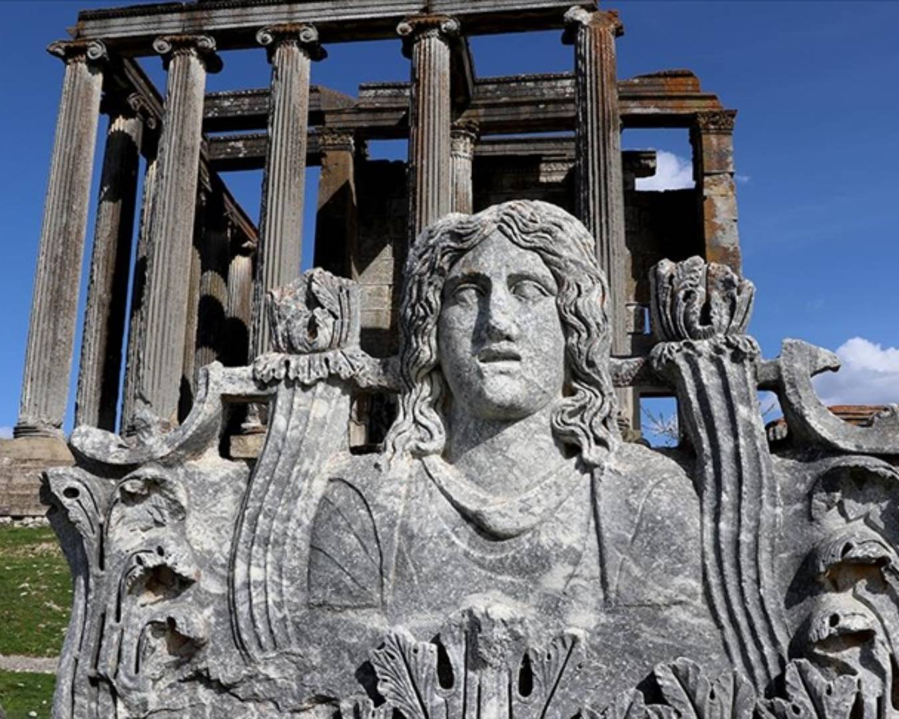
Roma dönemine ait bu antik kent, Zeus Tapınağı ile ünlüdür. Kütahya'nın Çavdarhisar ilçesinde yer alır.
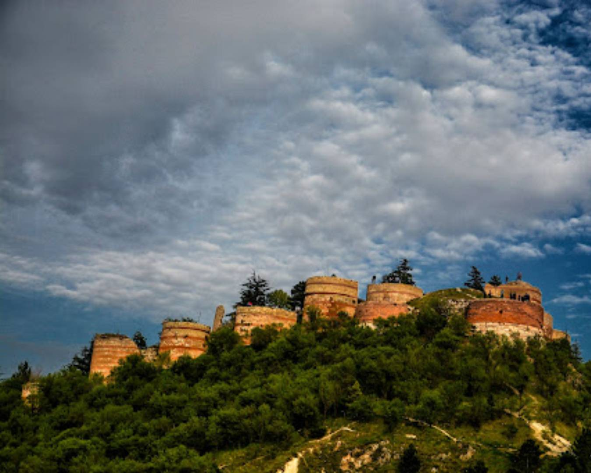
Şehrin merkezinde bulunan bu tarihi kale, Bizans dönemine kadar uzanır ve harika bir şehir manzarası sunar.
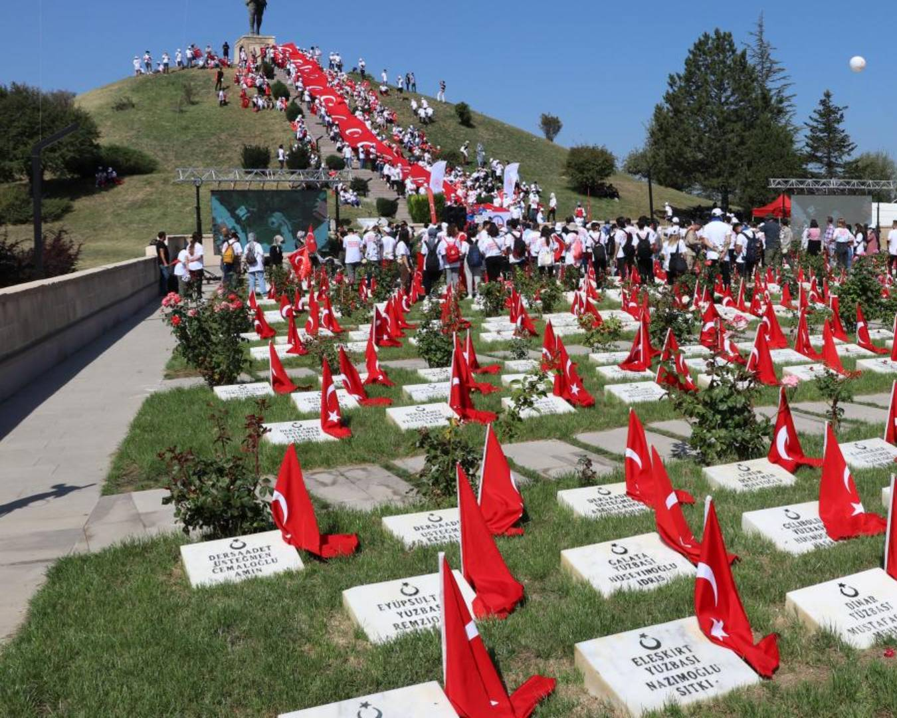
Büyük Taarruz'un önemli noktalarından biri olan bu şehitlik, Kurtuluş Savaşı'nın izlerini taşıyor.
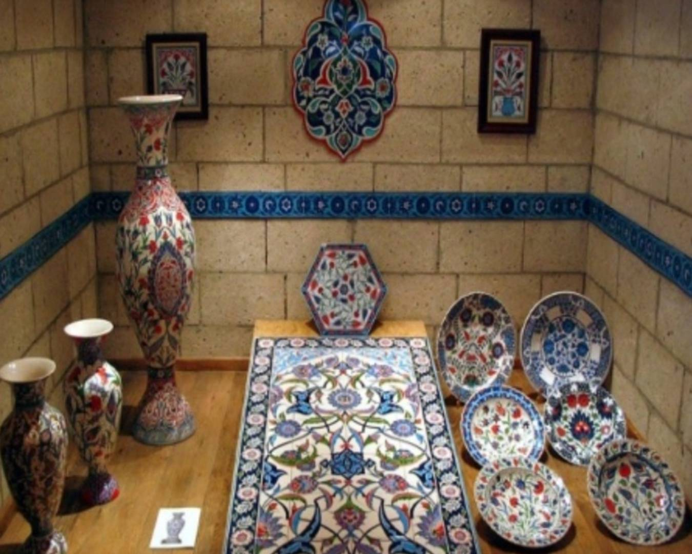
Kütahya'nın simgesi olan çiniciliğe adanmış bu müze, el yapımı eserleri ve çini tarihini gözler önüne seriyor.
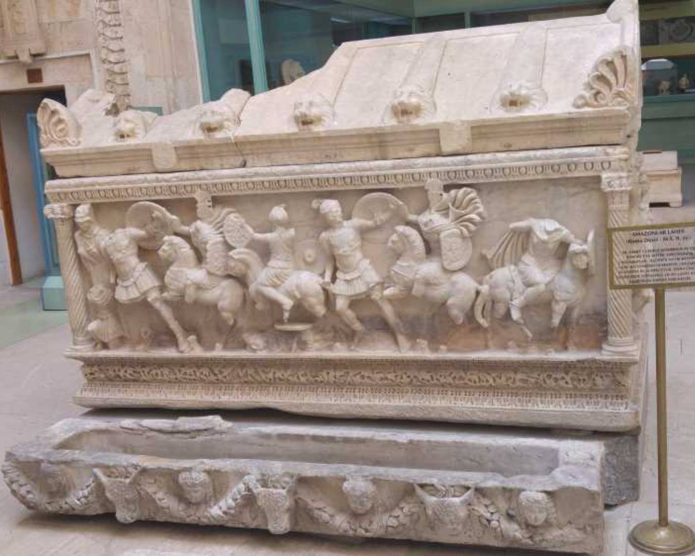
Kütahya'nın tarih öncesinden Osmanlı'ya kadar olan geçmişine ışık tutan önemli bir müzedir.
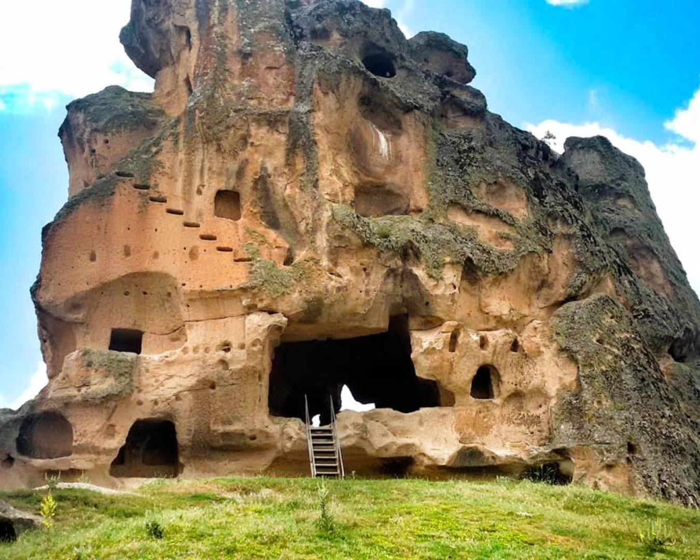
Kütahya, Afyon ve Eskişehir'i kapsayan bu vadi, tarihi kaya anıtları ve doğa yürüyüşü için harika bir yerdir.
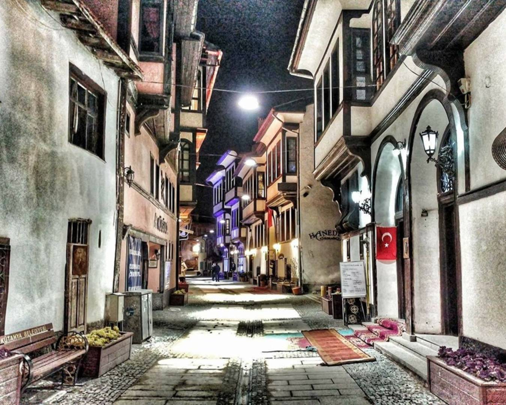
Tarihi Osmanlı evleriyle ünlü bu sokak, geleneksel Kütahya mimarisini yakından görmek isteyenler için ideal.
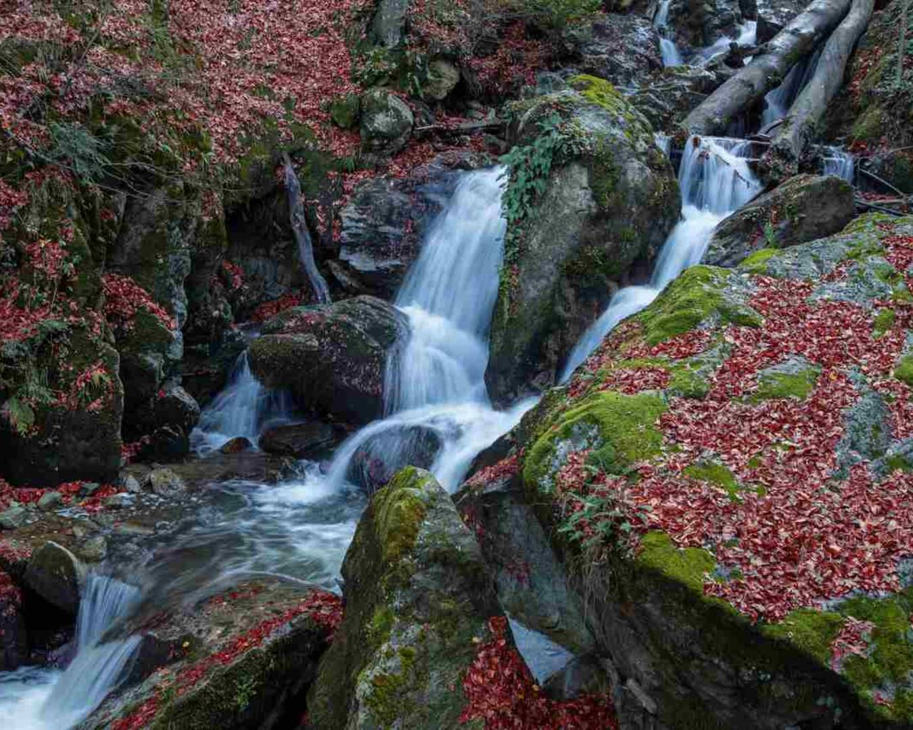
Doğal şifalı sularıyla ünlü bu termal bölge, hem dinlenmek hem de sağlık bulmak isteyenler için birebir.
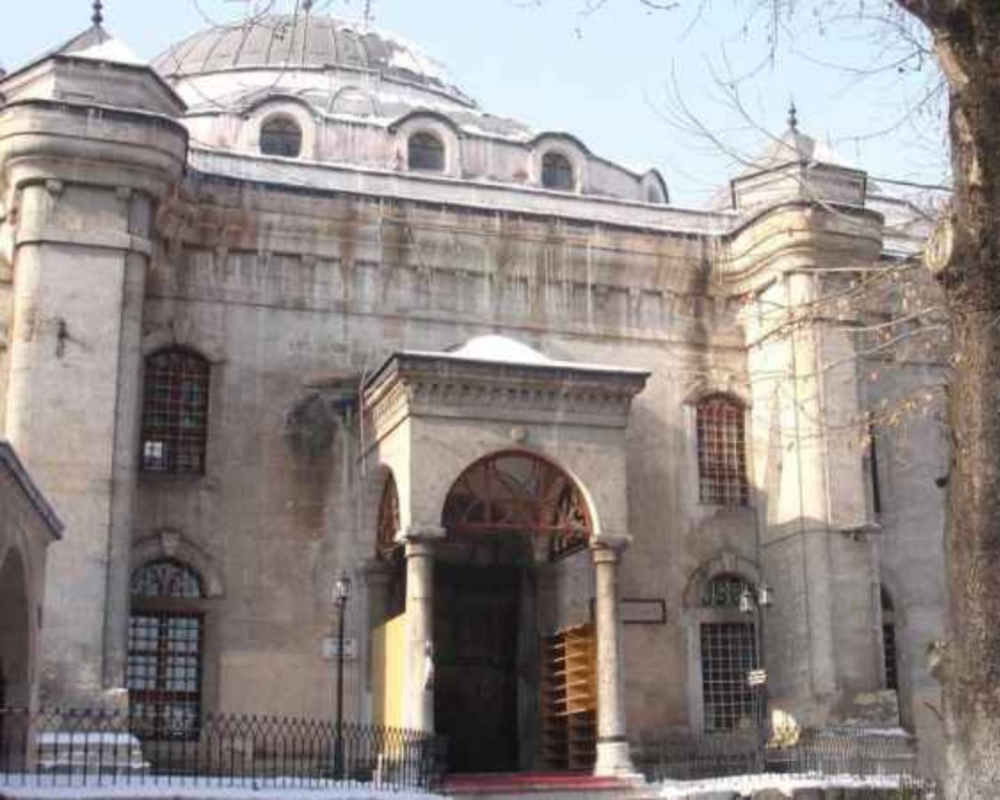
1380 yılında inşa edilen bu cami, Germiyanoğulları döneminden kalma olup hem tarihi hem de mimari açıdan büyük öneme sahiptir.